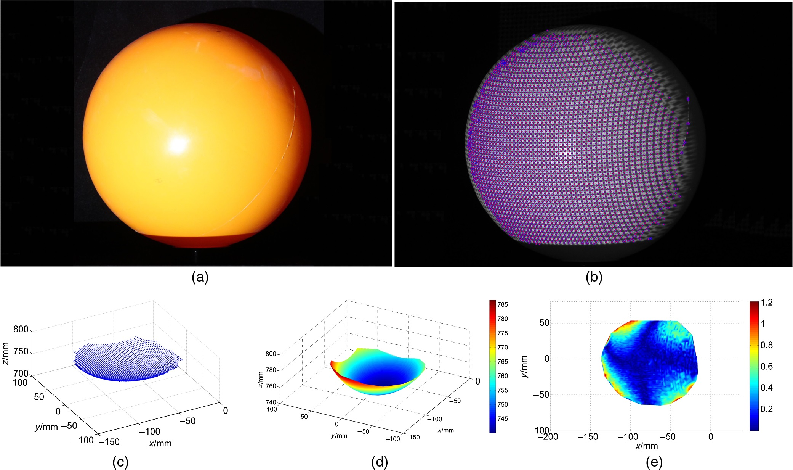

Publications
2021
 | UniFuse: Unidirectional Fusion for 360 Panorama Depth Estimation Hualie Jiang, Zhe Sheng, Siyu Zhu, Zilong, Dong and Rui Huang accepted by IEEE Robotics and Automation Letters, 2021. arXiv, Bibtex, Demo, Code |
2020
 | DiPE: Deeper into Photometric Errors for Unsupervised Learning of Depth and Ego-motion from Monocular Videos Hualie Jiang, Laiyan Ding, Zhenglong Sun and Rui Huang In IEEE/RSJ International Conference on Intelligent Robots and Systems (IROS), 2020. arXiv, Bibtex, Demo, Code |
2019
 | High Quality Monocular Depth Estimation via A Multi-Scale Network and A Detail-Preserving Objective Hualie Jiang and Rui Huang In IEEE International Conference on Image Processing (ICIP), 2019. IEEE, Bibtex, Code |
 | Hierarchical Binary Classification for Monocular Depth Estimation Hualie Jiang and Rui Huang In IEEE International Conference on Robotics and Biomimetics (ROBIO), 2019. IEEE, Bibtex |
2017 and Before
| An Automatic 3D Textured Model Building Method Using Stripe Structured Light System Hualie Jiang, Yuping Ye, Zhan Song, Suming Tang and Yuming Dong In International Conference on Computer Vision Systems (ICVS), 2017. Springer, Bibtex, Project | |
 | A High Dynamic Range Structured Light Means for the 3D Measurement of Specular Surface Zhan Song, Hualie Jiang, Haibo Lin and Suming Tang In Optics and Lasers in Engineering, 2017. Elsevier, Bibtex |
|  | Three-dimensional Surface Reconstruction via A Robust Binary Shape-coded Structured Light Method Suming Tang, Xu Zhang, Zhan Song, Hualie Jiang and Lei Nie In Optical Engineering, 2017. SPIE, Bibtex |
 | A Robust Feature Detection Algorithm for the Binary Encoded Single- Shot Structured Light System Hualie Jiang and Zhan Song IEEE International Conference on Information and Automation (ICIA), 2016. IEEE, Bibtex (Best Paper Finalist) |
Academic Service
Reviewer
- IEEE International Conference on Robotics and Automation, 2021
- IEEE/RSJ International Conference on Intelligent Robots and Systems, 2020
- IEEE International Conference on Information and Automation, 2016
- IEEE Transactions on Industrial Informatics
Teaching
- Teaching Assistant for CSC3180 Fundamentals of Artificial Intelligence, 2021 Spring, CUHKSZ
- Teaching Assistant for CSC3180 Fundamentals of Artificial Intelligence, 2020 Spring, CUHKSZ
- Teaching Assistant for CIE6004 Image Processing and Computer Vision, 2019 Fall, CUHKSZ
- Teaching Assistant for CSC3180 Fundamentals of Artificial Intelligence, 2019 Spring, CUHKSZ
- Teaching Assistant and Lecturing 3D for CIE6004 Image Processing and Computer Vision, 2018 Fall, CUHKSZ
- Teaching Assistant for CIE6010 Optimization Theory and Algorithms, 2018 Fall, CUHKSZ
- Teaching Assistant for CSC3180 Fundamentals of Artificial Intelligence, 2018 Spring, CUHKSZ
- Teaching Assistant and Lecturing 3D for CIE6004 Image Processing and Computer Vision, 2017 Fall, CUHKSZ